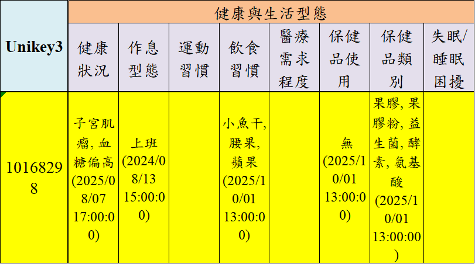

2025–2026｜企業合作
東森購物｜大型語言模型（LLM）客戶輪廓（Persona）分析系統
將原本散落在長篇客服與銷售對話中的顧客需求、偏好、消費習慣及互動變化，自動整理成可持續更新的客戶輪廓，讓客服與行銷人員不必逐篇閱讀，也能快速掌握顧客狀態。
使用流程 匯入客服／銷售對話 → AI 擷取並合併顧客資訊 → 取得客戶輪廓與 Excel 報表
關鍵方法
以提示詞工程（Prompt Engineering）將欄位定義、判斷條件、衝突處理與輸出格式寫入提示模板，驅動大型語言模型執行結構化資訊擷取；以 13 類、56 欄 Persona Schema 作為資料契約，透過增量合併更新既有輪廓，並以 JSON 驗證、解析修復與 429 重試建立容錯層。
企業效益
預估可將長篇對話的初次整理時間縮短約 98–99%，讓客服與行銷人員由逐篇閱讀、手動填表，改為覆核可持續更新的客戶輪廓。依單筆約 2 萬中文字測試，模型處理需 30–50 秒、費用約 NT$2.20；估算基準為人工整理 60–90 分鐘，未含人工覆核與修正。
我的貢獻
設計客戶輪廓擷取演算法、欄位規格與增量更新邏輯，完成批次後端及 JSON／Excel 輸出；前端由團隊成員負責。
